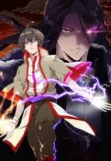
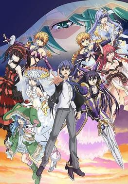
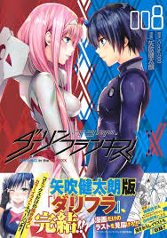
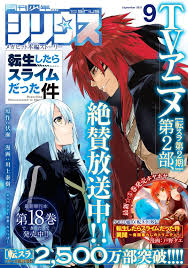
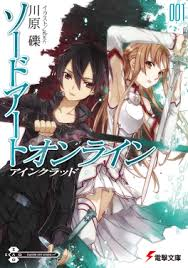
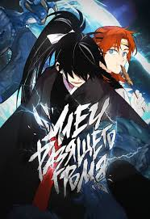
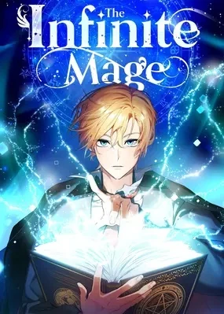
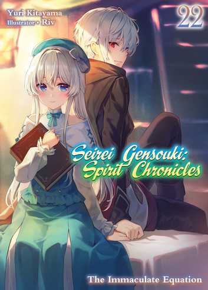
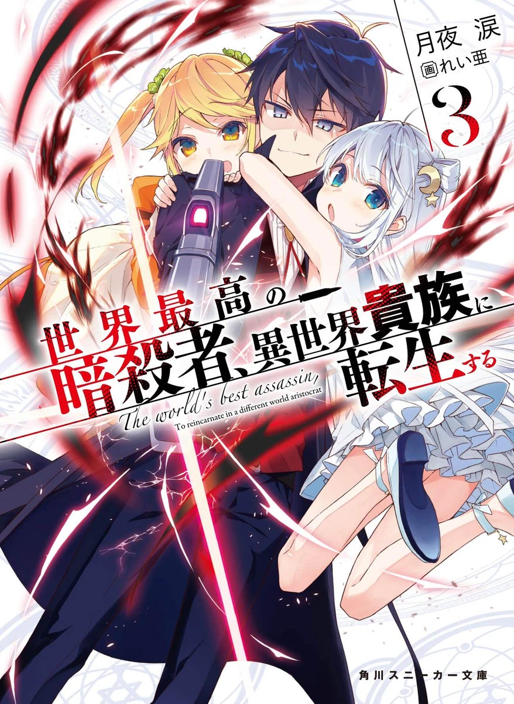
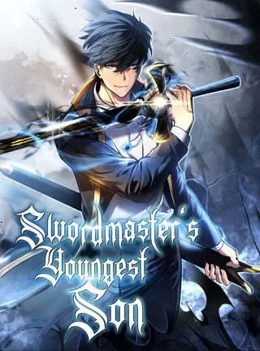

Menceritakan kisah seorang pria bernama Jinwoo,
yang awalnya adalah seorang "suicide hunter" atau pemburu bunuh diri di dunia yang penuh dengan monster dan kekacauan.
Di dunia tersebut, muncul berbagai monster dan manusia yang memiliki kemampuan super (kelas S) setelah dimunculkan oleh fenomena aneh yang disebut "Dungeons."
Untuk bertahan hidup, orang-orang sering kali terjebak dalam permainan hidup dan mati dengan monster.

Magic Emperor
Menceritakan kisah Han Lee, seorang penyihir yang sangat kuat di dunia sihir,
tetapi dikhianati oleh orang-orang yang ia percayai dan dibunuh dengan cara yang sangat tragis. Setelah kematiannya, ia terlahir kembali ke masa mudanya,
tepat saat ia masih seorang pemuda yang lemah dan tidak memiliki kekuatan sihir yang luar biasa seperti sebelumnya.
Dengan ingatannya yang utuh tentang semua kemampuan dan pengetahuan sihir yang dia miliki di kehidupan sebelumnya, Han Lee bertekad untuk membalas dendam
pada mereka yang telah mengkhianatinya.

Date A Live
bercerita tentang seorang pemuda bernama Shido Itsuka yang hidup di dunia yang sering dilanda serangan dari makhluk
misterius bernama Spirits. Spirits adalah entitas yang sangat kuat dan dapat menghancurkan kota-kota. Suatu hari, Shido bertemu dengan seorang Spirit bernama Tohka Yatogami,
yang tiba-tiba muncul dan menyebabkan kehancuran besar. Untuk menghentikan kerusakan yang disebabkan oleh para Spirits, Shido menemukan cara untuk "menyegel" kekuatan para
Spirit dengan cara membuat mereka jatuh cinta padanya. Shido harus berkencan dengan setiap Spirit yang muncul, sehingga mereka jatuh cinta dan dengan demikian, kekuatan mereka akan terkunci.

Darling In The FranXX
Cerita yang berlatar di dunia post-apokaliptik, di mana umat manusia tinggal di kota-kota yang terisolasi karena dunia luar telah dihancurkan
oleh makhluk raksasa yang disebut Klaxosaurs. Untuk melindungi umat manusia, anak-anak muda dilatih untuk mengendalikan mesin perang raksasa yang disebut Franxx, yang hanya dapat dijalankan oleh
pasangan pria dan wanita. Cerita berfokus pada seorang remaja bernama Hiro, yang dulunya adalah pilot berbakat, namun kehilangan kepercayaan diri setelah gagal dalam misi dan dianggap tidak berguna.

Tensei Shitara Slime Datta Ken
Bercerita tentang Satoru Mikami, seorang pria biasa yang bekerja di sebuah perusahaan. Suatu hari, dia dibunuh dalam sebuah insiden,
dan terlahir kembali ke dunia fantasi sebagai seekor slime, makhluk paling lemah dalam dunia tersebut. Namun, slime yang dia jadi ternyata memiliki kemampuan luar biasa yang disebut Predator, yang memungkinkan dia
untuk menyerap kekuatan dan kemampuan dari makhluk lain. Setelah terlahir kembali sebagai slime, Satoru yang kini dikenal dengan nama Rimuru Tempest, memulai petualangan di dunia baru tersebut. Dia berusaha untuk
menciptakan dunia yang damai dan adil.

Sword Art Online
Bercerita tentang Kirito, seorang remaja yang terjebak dalam permainan virtual reality MMORPG bernama Sword Art Online. Saat permainan baru diluncurkan, para pemain
tidak menyadari bahwa mereka tidak bisa keluar dari permainan tersebut. Pembuat game, Akihiko Kayaba, mengungkapkan bahwa mereka hanya dapat keluar jika berhasil menaklukkan semua level dalam game, dan jika mereka
mati dalam permainan, mereka juga akan mati di dunia nyata. Kirito, yang awalnya bermain sendirian, memutuskan untuk bertarung sendirian dan berusaha bertahan hidup untuk melarikan diri. Namun, seiring berjalannya waktu,
dia bertemu dengan berbagai pemain lain, termasuk Asuna, seorang pemain perempuan yang juga sangat terampil.

Lightning Degree
Bercerita tentang Jinwoo, seorang pemuda yang hidup di dunia penuh dengan pertarungan dan sihir. Meskipun ia tampak seperti orang biasa pada awalnya, ia memiliki potensi luar biasa
yang dapat membuatnya sangat kuat. Dalam dunia ini, setiap individu memiliki kemampuan dan kekuatan yang dapat meningkat melalui latihan dan pengalaman bertarung. Jinwoo awalnya merasa terjebak dalam kekurangan kekuatan dan kemampuan,
tetapi segalanya berubah saat ia mendapatkan sebuah kesempatan untuk melatih dirinya dengan cara yang sangat unik dan intens. Dengan tekad dan usaha keras, ia mulai mengembangkan kekuatan yang tak terbayangkan sebelumnya.

Infinite Mage
Bercerita tentang Shirone, seorang pemuda yang terlahir dalam keluarga yang sangat kuat dan berbakat dalam sihir. Meskipun memiliki potensi besar, Shirone terlahir dengan kekuatan yang terbatas dan selalu
dianggap lemah. Suatu hari, dia diberikan kesempatan untuk mendapatkan kekuatan tak terbatas setelah mengalami kejadian yang mengubah hidupnya. Setelah memperoleh kemampuan baru, Shirone mulai mengembangkan sihir yang sangat kuat dan berusaha menguasai
kekuatan yang terus berkembang tanpa batas. Seiring perjalanan cerita, dia berhadapan dengan berbagai musuh dan ancaman, serta menjelajahi misteri kekuatan tak terbatas yang ia miliki.

Seirei Gensouki
Bercerita tentang Rio, seorang pemuda yang terlahir di dunia fantasi setelah mengalami kehidupan tragis di dunia sebelumnya. Di kehidupan lamanya, Rio adalah seorang pemuda Jepang yang dibunuh,
dan setelah itu, dia terlahir kembali sebagai anak dari seorang wanita miskin di dunia baru yang penuh dengan sihir dan roh. Saat masih kecil, Rio kehilangan ibunya, dan dia diperlakukan dengan buruk oleh keluarga angkatnya. Namun, ia memiliki kekuatan
luar biasa yang tersembunyi, hasil dari ingatan dan kekuatan dari kehidupan sebelumnya.

Sekai Saikō no Ansatsusha, Isekai Kizoku ni Tensei suru
Bercerita tentang seorang pembunuh legendaris yang dikenal sebagai Lugh. Setelah menyelesaikan misi terakhirnya, Lugh terbunuh dan terlahir kembali ke dunia lain sebagai seorang anak dari keluarga bangsawan kaya.
Di kehidupan barunya, dia dilahirkan dengan nama Lugh Tuatha Dé, dan dia diberi kesempatan untuk menjalani kehidupan yang berbeda. Namun, meskipun terlahir sebagai bangsawan, Lugh masih memiliki tujuan yang sama: menjadi pembunuh yang paling kuat
dan menghabisi musuh-musuhnya, sambil menggunakan kecerdasannya dan keterampilan membunuh yang luar biasa.

Swordmaster's Youngest Son
Bercerita tentang Jin Runcandel, putra bungsu dari keluarga terkenal dan sangat kuat, keluarga Runcandel, yang merupakan keturunan dari seorang pedang master legendaris. Jin, meskipun dilahirkan dalam keluarga yang sangat dihormati,
diperlakukan dengan buruk karena ia dianggap sebagai anak yang tidak memiliki bakat atau kemampuan seperti saudara-saudaranya yang lebih tua. Akibatnya, ia merasa terpinggirkan dan diperlakukan sebagai beban keluarga.
Namun, setelah sebuah peristiwa besar, Jin mendapatkan kesempatan kedua untuk hidup di dunia yang sama, tetapi kali ini dia memiliki kesempatan untuk mengubah nasibnya. Dengan ingatan dan pengetahuan dari kehidupan sebelumnya.
The Novel Extra(Remake)
Bercerita tentang Kim Hajin, seorang pemuda yang tiba-tiba terjebak dalam dunia novel yang ia baca. Namun, dia tidak menjadi tokoh utama atau bahkan karakter penting, melainkan hanya seorang "extra" yang tidak
memiliki pengaruh besar dalam cerita. Pada awalnya, dia merasa terperangkap dalam dunia yang tidak dikenal, di mana semua peristiwa sudah ditentukan sesuai alur cerita novel tersebut. Namun, setelah mengetahui bahwa dia memiliki kesempatan untuk mengubah nasibnya,
Kim Hajin mulai mencari cara untuk bertahan hidup dan bahkan memanfaatkan kesempatan ini untuk mendapatkan kekuatan dan mempengaruhi dunia di sekitarnya.